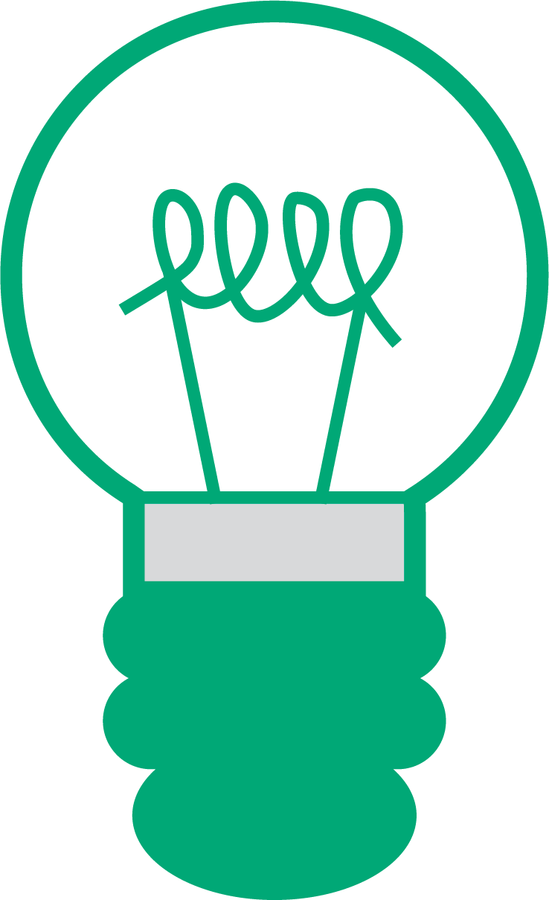
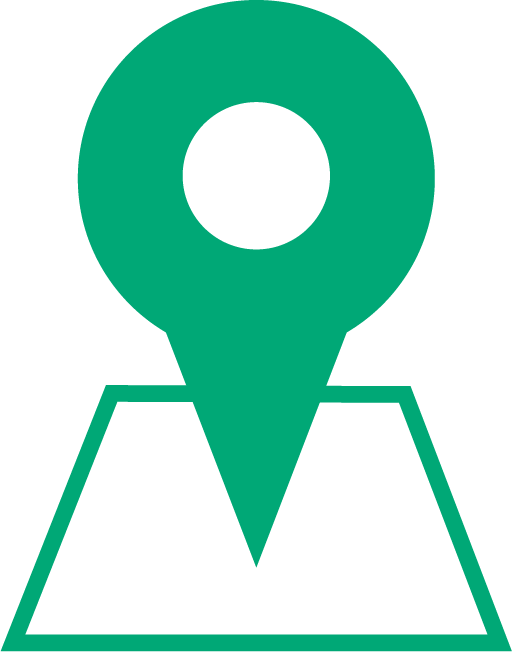
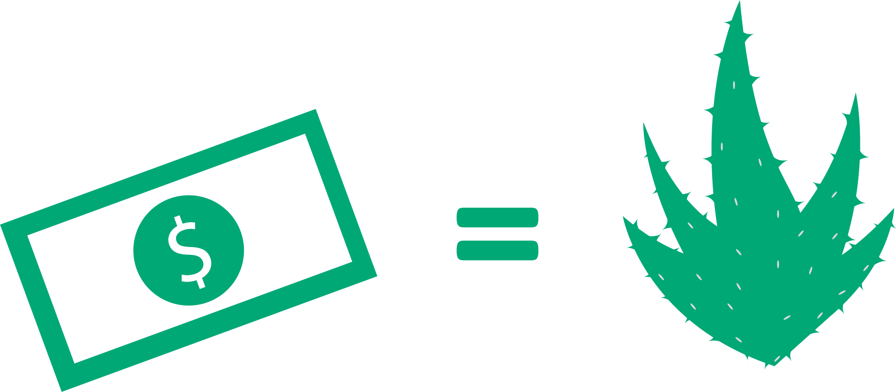

Plant it and we will make it!
Ooit gedacht om milieuvervuiling tegen te gaan? Hou je van natuur en wil je de wereld om u heen meer groen maken?
Doe mee met “Pole-ution Solution”!
De creatieve beweging om de stad meer groen te maken met elke paal!
Lees onder "Hoe kunt u bijdragen?" over hoe u kunt meedoen!
Meest recente bijdragen
Onze missie
Terwijl urbanisatie het groen steeds verminderd, willen wij in de nabije toekomst streven naar een mileu vriendelijkere wereld met als eerste stap een groenere stad.
Om ons stad groen te houden hebben wij een oplossing bedacht om het effectief te doen zonder de maatschappij te belemmeren.
Met een out-of-the-box idee zijn we tot een oplossing gekomen waarbij we straatpalen transformeren naar plantenbakken. Zo wordt er creatief gebruik gemaakt van “overgebleven” ruimte om de omgeving meer milieuvriendelijk te maken en belemmer je tegelijker tijd de maatschappij niet met “onnodige” groen gebied.
"Sic Parvis Magna"
Onze motto komt van de latijnse uitspraak “Sic parvis magna” (Grootheid uit kleine beginnetjes).
Wij willen als doel de wereld groener maken, een grote maar lastige taak die bereikt kan worden met kleine stappen.
Natuurlijk doen wij dit niet alleen, maar GEZAMENLIJK.
“Grootheid komt voort uit een klein begin.”
En dat begint bij U.
Hoe kunt u bijdragen?
Zoek in uw wijk een willekeurige straatpaal en plant simpel weg een plant naar keuze
erop. Dit kunt u doen door een geimproviseerde plantenbak te gebruiken. Het kan van plastic,
roestvrij staal, gegalvaniseerde staal, palet, steen of klei zijn. Bevestig de plantenbak stevig
aan de paal en uw bijdrage is voltooid!
Wilt u uw bijdrage hier op de website terugzien? Tag ons in de foto (naam+plaats) van uw bijdrage op instagram: @Pole-lutionSolution
Bijdragen van de community
Hieronder ziet u alle actuele bijdragen van de community in Amsterdam. Elk kaartspeld is een kleine stap richting een groenere wereld.
Wel bijdragen maar wordt u belemmert in het leven?
Wij begrijpen volkomen hoe druk het leven kan zijn. Werk, sociale contacten behouden, school, noem het maar op.

Geen zorgen! U kunt alsnog bijdragen door een eigen gekozen bedrag te doneren aan ons nieuwe project! Hierbij planten
wij Aloe Vera planten VOOR U op willekeurige straatpalen in uw wijk!
Wilt
u meer weten hierover?